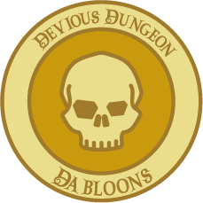
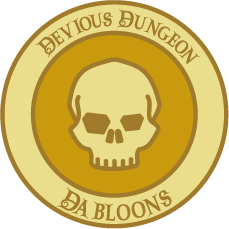
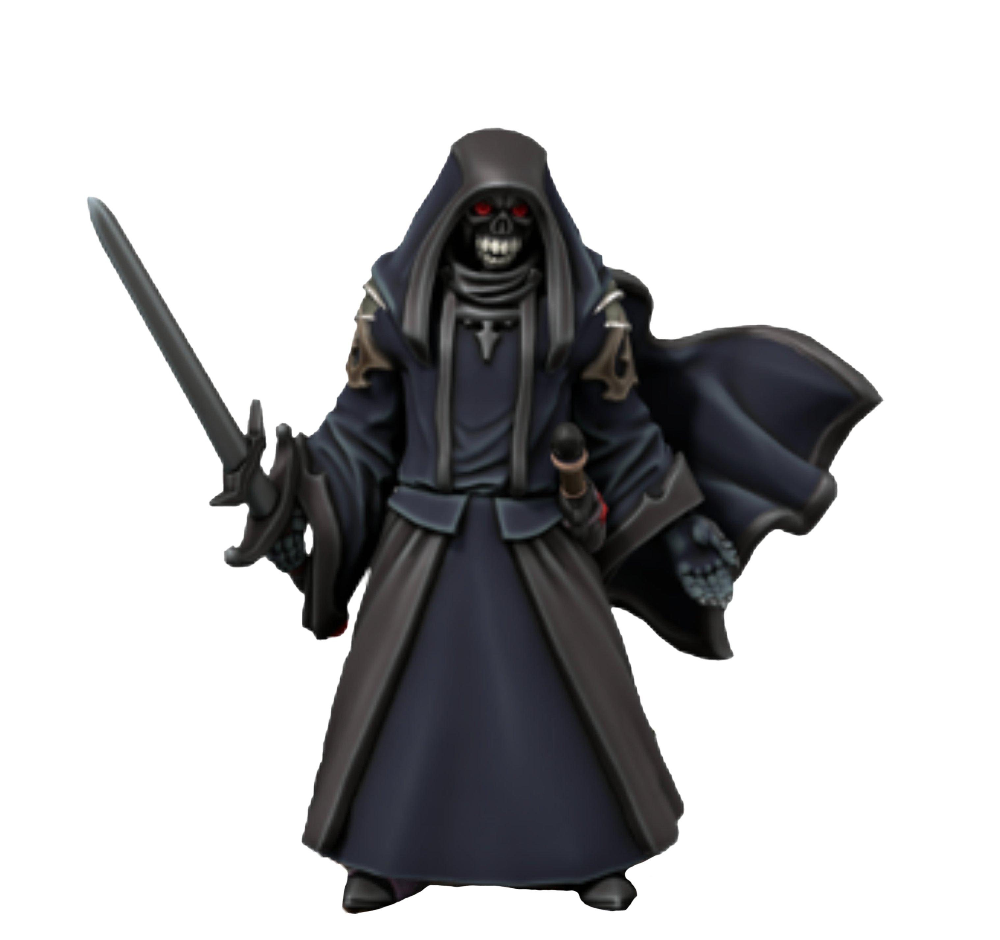
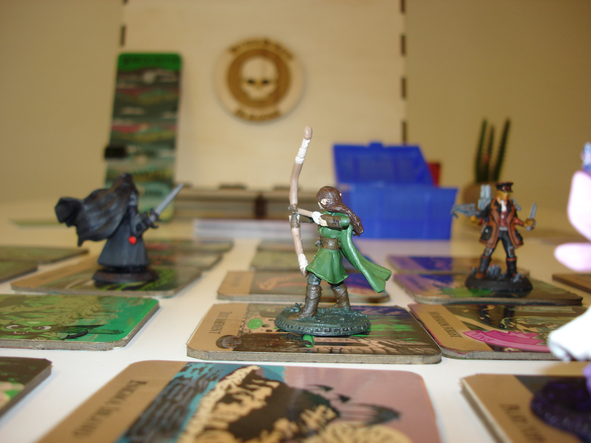
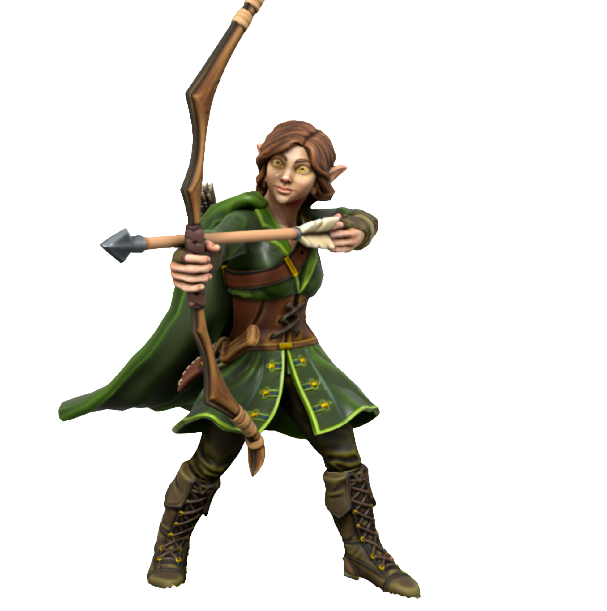
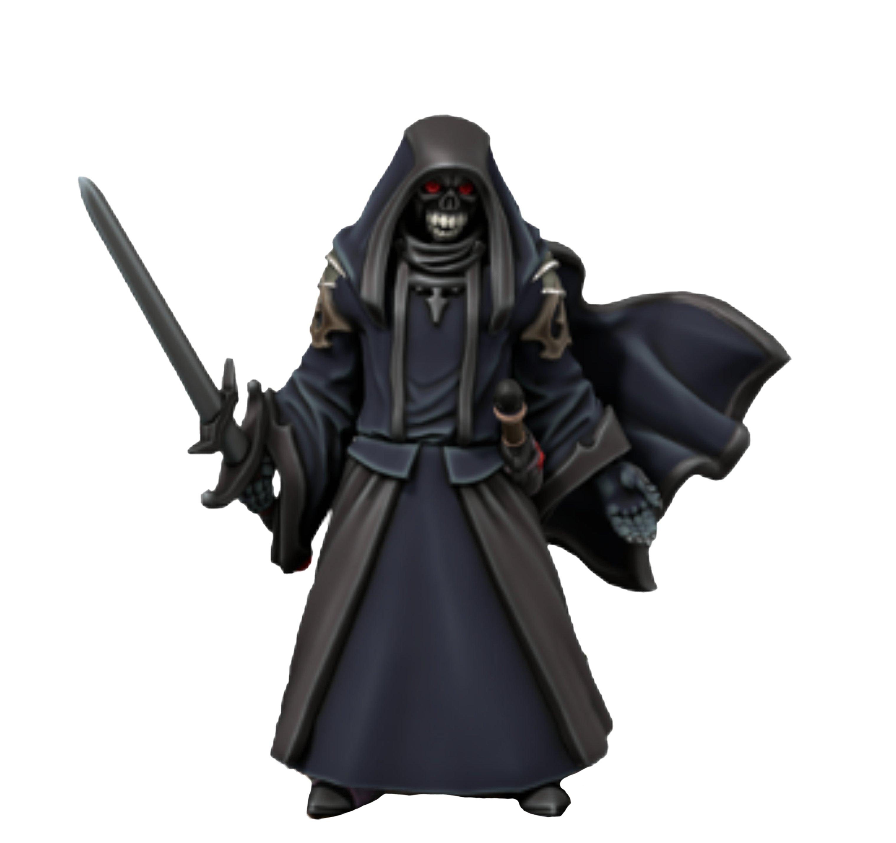
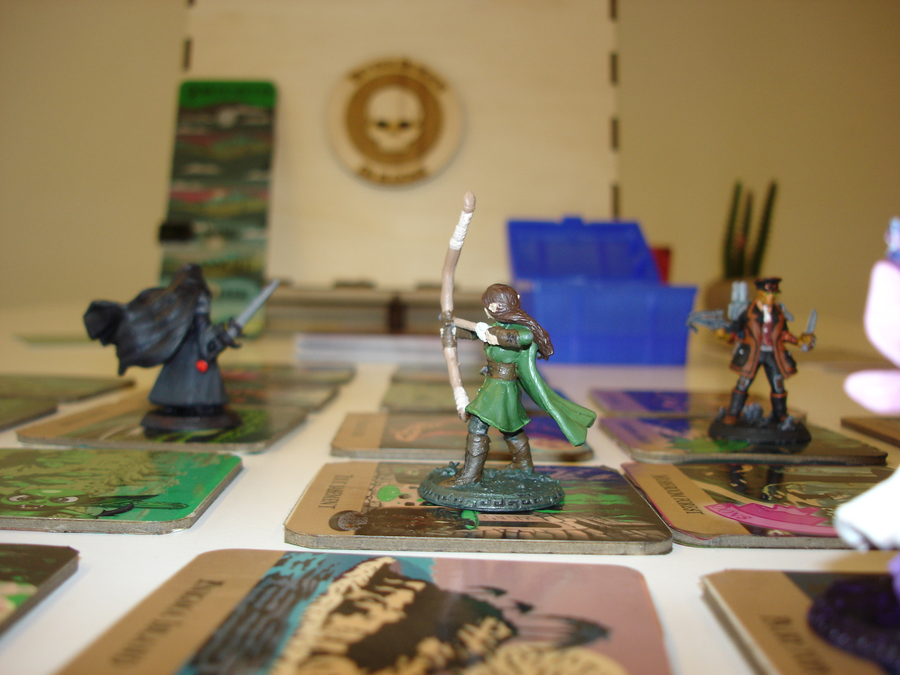
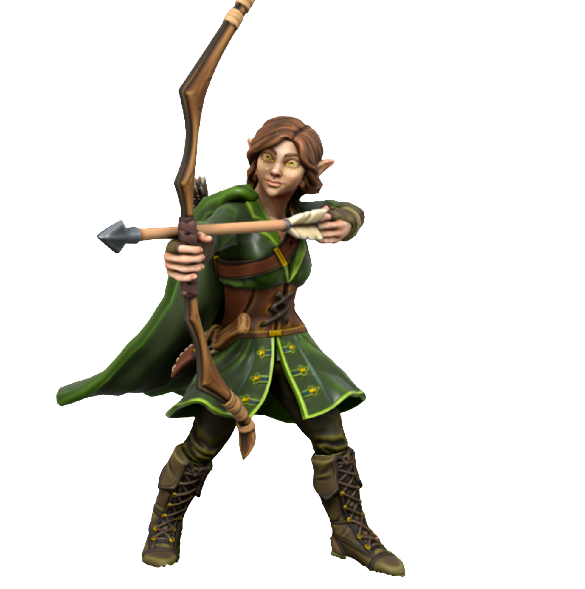

Devious Dungeon Dabloons
Devious Dungeon Dabloons is a board game with a fantasy housestyle. I created this game together with three of my classmates/friends and it has been one of my favorite projects to work on so far.
 

 




